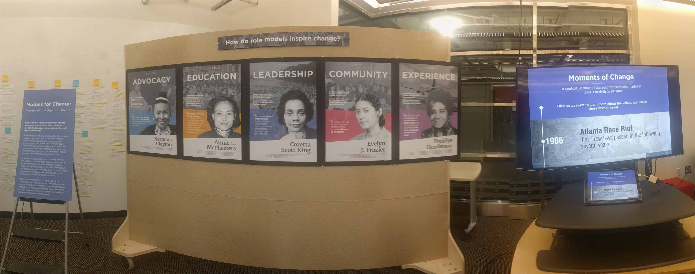
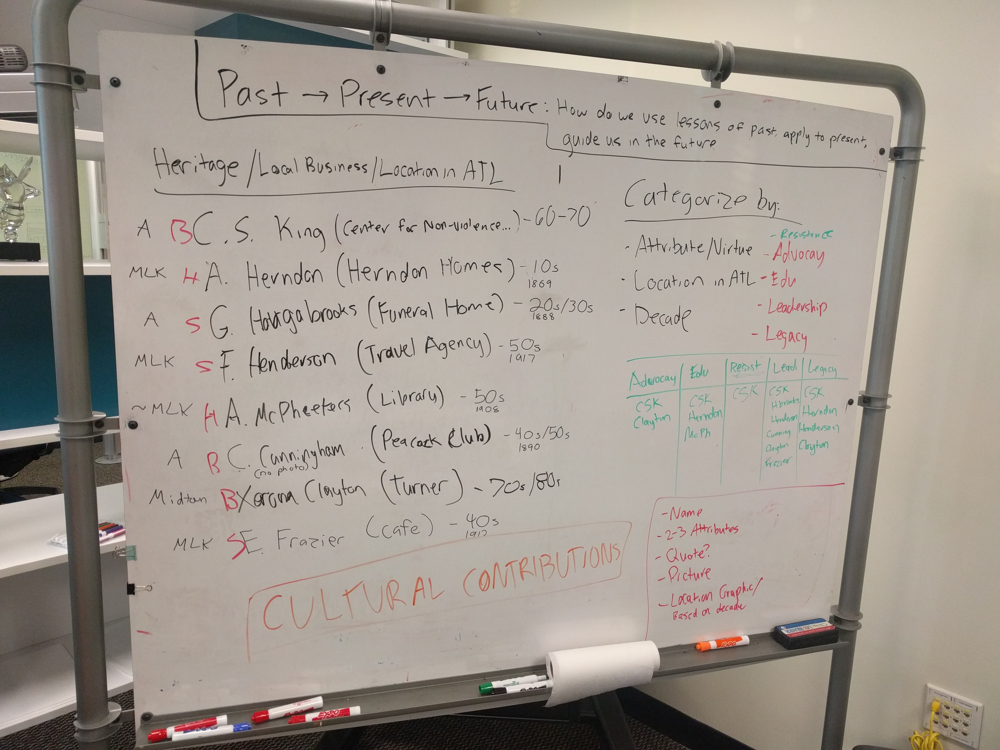
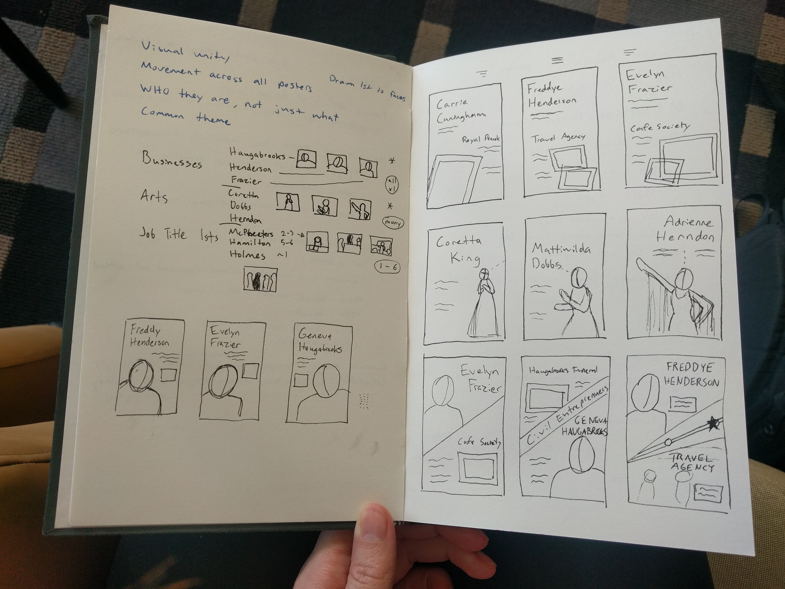
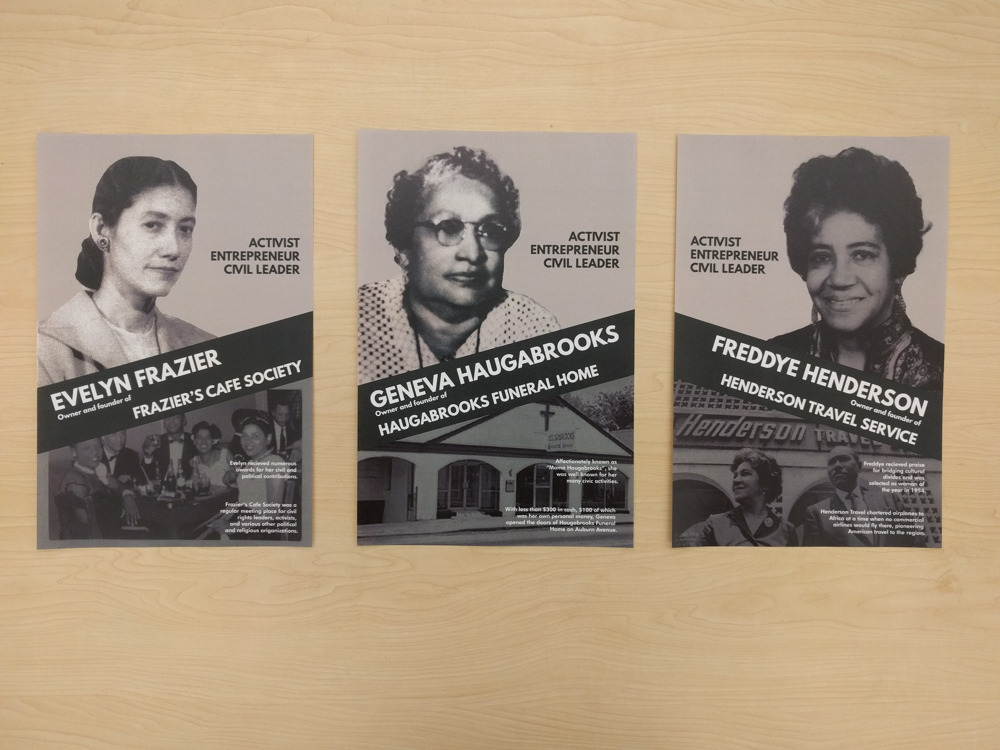
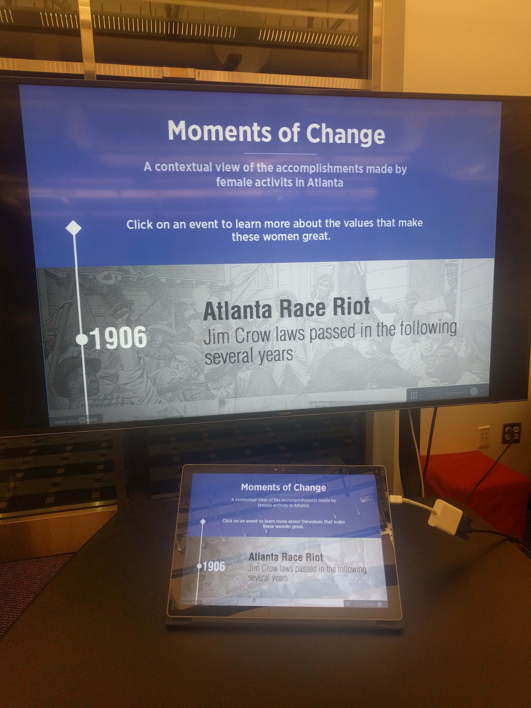
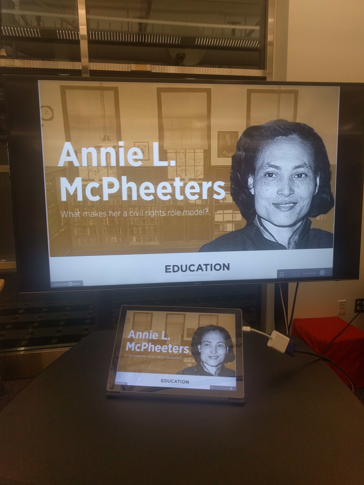

Overview
Models For Change is an exhibition for Apex Museum, celebrating women of the civil rights movement as role models for social change. The exhibit consists of a poster series highlighting the timeless values each activist embodies, a timeline of their major accomplishments in the civil rights movement, and an interactive board for participants to write about role models in their lives.

Process
CONCEPT
The theme and format of the exhibition was open ended, with the only requirements being a poster series and digital artifact. Our group of three came in having researched several activists from the previous project, so we began by looking for connections to use as the exhibition's overall theme.

We explored time, location, career contributions, cultural impact, and personal attributes. We chose personal values as perspectives through which activism can be realized, and later refined this to general qualities of role models. This is how we arrived at the title Models For Change.
RESEARCH
All three members of the group came in with some knowledge of their chosen activists from the previous project, but we each conducted more research to adjust our content to the exhibition theme.
We utilized a collection of historical calendars at the Auburn Avenue Research Library, general online research, and various historical databases for multimedia such as articles, photos, and videos.
POSTERS - MODELS FOR CHANGE
The poster designs originally came from an amalgamation of our previous project's posters, which was then adjusted to fit the exhibition theme and tweaked through weekly critiques. More details can be found in the project's
process book.


DIGITAL ARTIFACT - MOMENTS OF CHANGE
Our digital artifact was originally an interactive map, showing images and events in Atlanta through the decades with a focus on the lives of our chosen activists. This included the history of the women and their values, as well as time, location, and other media such as photo and videos.
Eventually we found that this was too much information in one place and it felt disjointed from the poster series, so we swapped to a digital timeline for a more consistent and streamlined experience. This allowed us to keep the historical event information, as well as the details about the women's lives and multimedia artifacts, which are hosted on individual pages for each person. More details can be found in the project's
process book. You can view the timeline's
Invision prototype here.


{kind=link}
{kind=link}
{kind=link}
{kind=link}
{kind=link}
{kind=link}
{kind=link}
{kind=link}
{kind=link}
{kind=link}
{kind=link}
{kind=link}